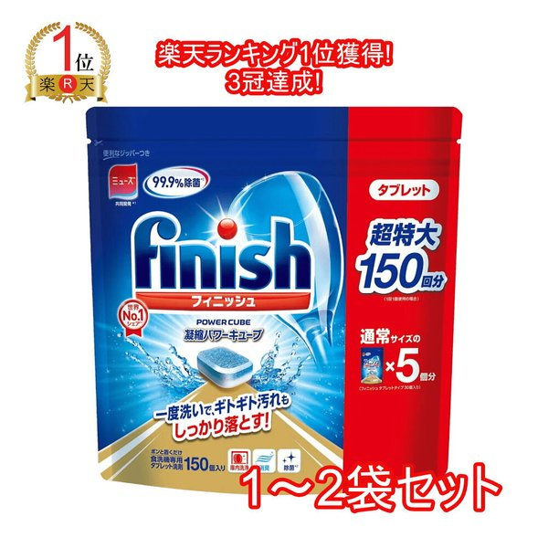
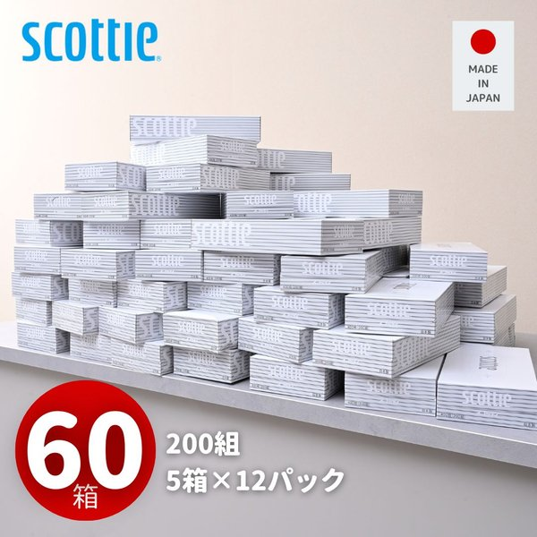
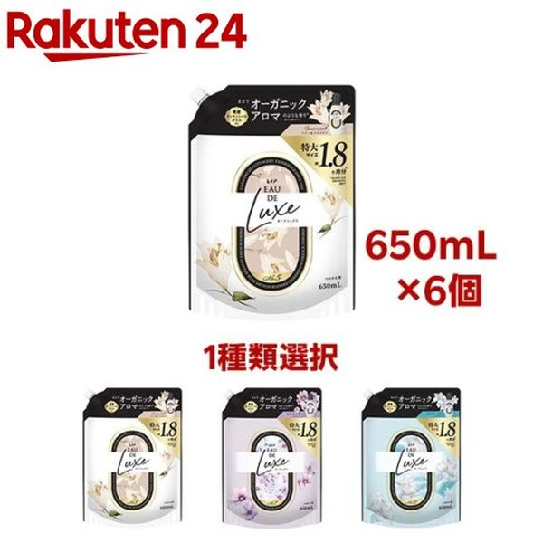
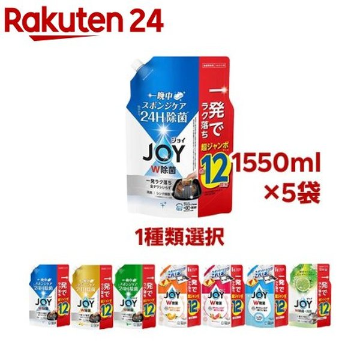
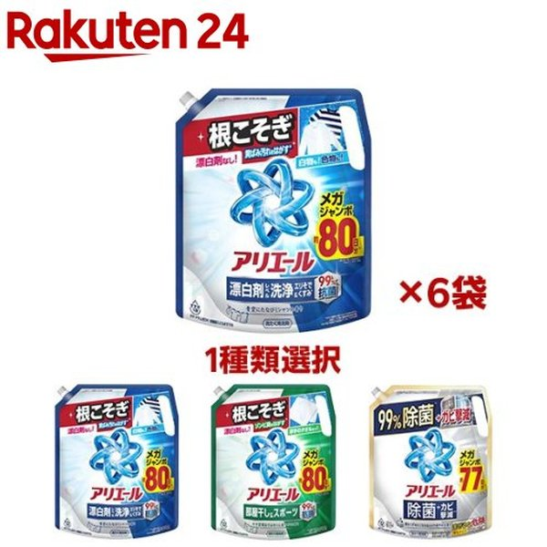
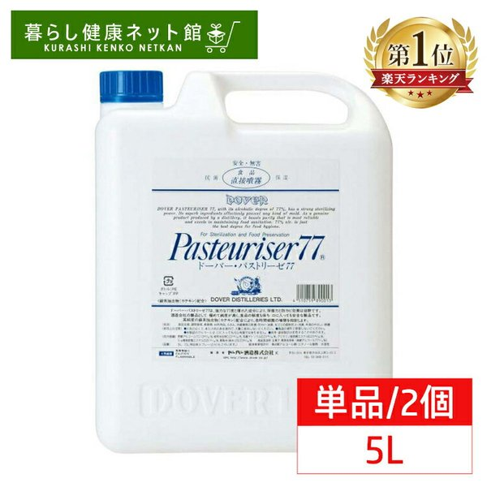
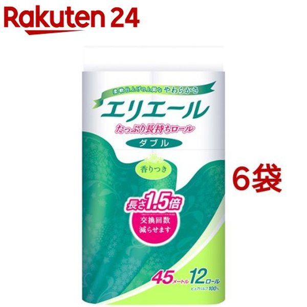
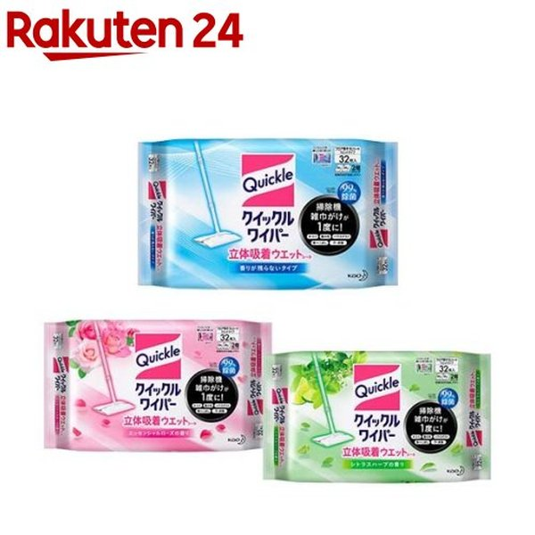
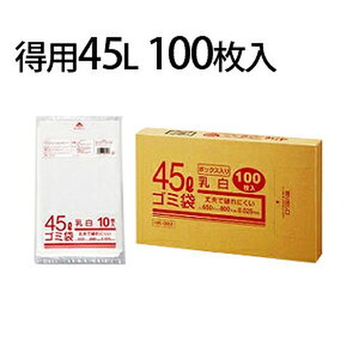

【2026年ブラックフライデー】買い回りでまとめ買い！洗剤・日用品の大容量ストック10選
洗剤やトイレットペーパーは、切れてから買いに行くと割高になりがちです。とくにブラックフライデーや買い回りキャンペーンの時期は、ポイント還元が重なるぶん、ふだん使うものをまとめて買うほうが得になります。
選ぶ軸は、1回でどれだけ持つか、置き場所に収まるか、そして毎日必ず使うものかの3つです。洗濯洗剤や食器用洗剤は詰め替えのケース買いが基本で、6袋もあれば数ヶ月は買い足さずに済みます。トイレットペーパーやティッシュは、箱のまま積めるタイプを選ぶと収納棚に収まります。除菌スプレーは5Lの詰め替えを買って、スプレーボトルに小分けするほうが、結果的にいちばん安く済みます。ゴミ袋やキッチン用の消耗品は、厚さと枚数で選ぶと失敗しません。
本記事では、楽天市場で人気・高評価の大容量の日用品・洗剤10選を、実売価格とレビュー評価つきで写真付き紹介します。
- おすすめ10選 スペック・特徴比較表
- BEST 1｜アタック 抗菌EX 洗濯洗剤 詰め替え 超特大サイズ 6袋セット
- BEST 2｜finish パワーキューブ ビッグパック 150個入り
- BEST 3｜スコッティ ティッシュペーパー 200組 5箱×12パック（合計60箱）
- BEST 4｜レノア オードリュクス 柔軟剤 詰め替え 特大 650ml×6本セット
- BEST 5｜ジョイ W除菌 食器用洗剤 詰め替え 超ジャンボ 1550ml×5本セット
- BEST 6｜アリエール 液体洗濯洗剤 詰め替え 1950g×6袋セット（1種類選択）
- BEST 7｜パストリーゼ77 アルコール除菌スプレー 5L 詰め替え 2本セット
- BEST 8｜エリエール トイレットティシュー たっぷり長持ち ダブル 12ロール×6個（72ロール）
- BEST 9｜クイックルワイパー 立体吸着シート 大容量 32枚入り
- BEST 10｜業務用ゴミ袋 45L 半透明 厚手0.025mm 1箱100枚入り（EC-HK-093）
- 【読者負担0円】買わなくても得する無料サービス
- まとめ：日用品・洗剤の大容量ストック10選の選び方
| 順位 | 商品名 | ブランド | 最大の特徴・おすすめ理由 | 総合評価 |
|---|---|---|---|---|
| BEST 1 | アタック 抗菌EX 洗濯洗剤 詰め替え 超特大サイズ 6袋セット | 花王（アタック） | 詰め替え超特大サイズの6袋セット | 4.68 |
| BEST 2 | finish パワーキューブ ビッグパック 150個入り | フィニッシュ（finish） | 150個入りで約5ヶ月分 | 4.77 |
| BEST 3 | スコッティ ティッシュペーパー 200組 5箱×12パック（合計60箱） | 日本製紙クレシア（スコッティ） | 合計60箱のケース販売 | 4.80 |
| BEST 4 | レノア オードリュクス 柔軟剤 詰め替え 特大 650ml×6本セット | 花王（レノア） | 650ml×6本のセット | 4.59 |
| BEST 5 | ジョイ W除菌 食器用洗剤 詰め替え 超ジャンボ 1550ml×5本セット | P&G（ジョイ） | 1550ml×5本の超ジャンボ | 4.76 |
| BEST 6 | アリエール 液体洗濯洗剤 詰め替え 1950g×6袋セット（1種類選択） | P&G（アリエール） | 1950g×6袋で合計11.7kg | 4.79 |
| BEST 7 | パストリーゼ77 アルコール除菌スプレー 5L 詰め替え 2本セット | ドーバー酒造（パストリーゼ77） | 食品に使えるアルコール | 4.77 |
| BEST 8 | エリエール トイレットティシュー たっぷり長持ち ダブル 12ロール×6個（72ロール） | 大王製紙（エリエール） | 合計72ロールのまとめ買い | 4.52 |
| BEST 9 | クイックルワイパー 立体吸着シート 大容量 32枚入り | 花王（クイックル） | 32枚入りの大容量パック | 4.62 |
| BEST 10 | 業務用ゴミ袋 45L 半透明 厚手0.025mm 1箱100枚入り（EC-HK-093） | クラフトマン | 45L・100枚入りの業務用 | 4.94 |
アタック 抗菌EX 洗濯洗剤 詰め替え 超特大サイズ 6袋セット

花王のアタック抗菌EXの詰め替え超特大サイズを、6袋まとめたケース。抗菌EXは洗濯物のニオイ対策を重視したシリーズで、部屋干しが続く時期の生乾き臭が気になる家に向いています。6袋あれば、毎日洗濯する家庭でもしばらく買い足さずに済みます。箱ごと洗濯機の横に置いておけるなら、補充の手間もほとんどありません。楽天市場での実売価格は約6,171円（2026年11月時点）。
- 詰め替え超特大サイズの6袋セット
- 抗菌EXで部屋干しのニオイ対策
- ケース買いで買い足しの回数が減る
- 6袋分の収納場所が必要なので、洗濯機の横を空けておく
finish パワーキューブ ビッグパック 150個入り

食洗機用のタブレット洗剤、フィニッシュのパワーキューブを150個入りのビッグパックで。1日1回使っても約5ヶ月分になり、毎回の計量がいらないタブレットタイプです。食洗機の庫内に汚れが溜まりやすい給水タンクまわりのニオイ対策にも使えます。袋のままシンク下に入れると場所を取るので、フタ付きのケースに移すと取り出しやすくなります。楽天市場での実売価格は約1,877円（2026年11月時点）。
- 150個入りで約5ヶ月分
- 計量いらずのタブレット
- 食洗機のニオイ対策にも使える
- 1袋150個は開封後にかさばるので、密閉ケースに移す
スコッティ ティッシュペーパー 200組 5箱×12パック（合計60箱）

日本製紙クレシアのスコッティ ティッシュペーパーを、5箱パック×12セット（合計60箱）でまとめ買いするケース販売。200組入りのボックスなので、リビング・寝室・洗面所と各部屋に置いても長く持ちます。箱のまま積んで保管できるため、湿気の少ない押し入れやクローゼットの上段が置き場所になります。楽天市場での実売価格は約5,499円（2026年11月時点）。
- 合計60箱のケース販売
- 200組入りで長持ち
- 箱のまま積んで保管できる
- 60箱はかなりの量なので、保管場所を先に確保する
レノア オードリュクス 柔軟剤 詰め替え 特大 650ml×6本セット

レノアの上位ライン、オードリュクスの柔軟剤詰め替え特大650mlを6本セットにしたもの。香水のように香りが長く続くタイプで、洗濯物を畳むときまで香りが残ります。1本が650mlと小ぶりなので、洗面所の棚に1本ずつ出しておけます。香りを季節で変えたい人は、6本のうち数本を違う香りにしておくと気分転換になります。楽天市場での実売価格は約5,980円（2026年11月時点）。
- 650ml×6本のセット
- 香りが長く続くオードリュクス
- 小ぶりで置き場所を選ばない
- 香りが強いので、無香料を好む人には不向き
ジョイ W除菌 食器用洗剤 詰め替え 超ジャンボ 1550ml×5本セット

P&Gの食器用洗剤、ジョイのW除菌タイプの詰め替え超ジャンボ1550mlを5本まとめたセット。1本で通常サイズの数本分あり、毎日食器を洗う家庭でも交換の頻度が下がります。除菌成分入りなので、スポンジやシンクまわりのニオイが気になるときにも使えます。詰め替え容器は1つあれば足りるので、残りは箱のまま保管しておけます。楽天市場での実売価格は約4,988円（2026年11月時点）。
- 1550ml×5本の超ジャンボ
- W除菌タイプでシンクまわりにも
- 詰め替えの頻度が下がる
- 5本セットで重いため、届いたら1本ずつ棚へ移す
アリエール 液体洗濯洗剤 詰め替え 1950g×6袋セット（1種類選択）

P&Gの液体洗濯洗剤アリエールの詰め替え1950gを、6袋まとめたケース販売。合計11.7kgあるので、洗濯を毎日回す家でも買い足す頻度がぐっと下がります。香りやタイプを1種類選べるため、気に入ったものを固定して使えます。袋のまま収納ボックスにまとめて入れ、詰め替え容器へは移すだけにしておくと、切れた日に慌てません。楽天市場での実売価格は約8,602円（2026年11月時点）。
- 1950g×6袋で合計11.7kg
- 好きなタイプを1種類選べる
- 詰め替えパックのまま保管できる
- 6袋は場所を取るので、収納ケースを先に決めておく
パストリーゼ77 アルコール除菌スプレー 5L 詰め替え 2本セット

ドーバー酒造のアルコール除菌スプレー、パストリーゼ77の5L詰め替えを2本セットで。食品に直接使えるアルコールなので、まな板や包丁、テーブル、お弁当箱まわりの除菌に使えます。5Lあるとスプレーボトルに小分けして、キッチン・リビング・玄関と置き場所を増やせます。詰め替えの手間も数ヶ月に1回程度で済みます。楽天市場での実売価格は約4,180円（2026年11月時点）。
- 食品に使えるアルコール
- 5L×2本の大容量
- 小分けして家中に置ける
- 5Lは重いので、小分け用のスプレーボトルを用意する
エリエール トイレットティシュー たっぷり長持ち ダブル 12ロール×6個（72ロール）

大王製紙のエリエール トイレットティシューのダブルを、12ロール×6個セットで届きます。合計72ロールで、4人家族なら数ヶ月分。たっぷり長持ちタイプは1ロールが長いので、トイレットペーパーを交換する回数そのものが減ります。ダブルのやわらかい紙質で、肌触りを重視する家にも向いています。楽天市場での実売価格は約7,547円（2026年11月時点）。
- 合計72ロールのまとめ買い
- 1ロールが長く交換の回数が減る
- ダブルで肌触りがやわらかい
- 72ロールは置き場所を取るので、収納棚の段を空けておく
クイックルワイパー 立体吸着シート 大容量 32枚入り

花王のクイックルワイパー用の立体吸着シートを、32枚入りの大容量パックで。1回の掃除で1枚使うので、32枚あれば1ヶ月以上は買い足さずに済みます。立体吸着タイプは、シートの凹凸がホコリや髪の毛をからめ取るので、フローリングの拭き掃除が1回で終わります。ワイパー本体は手持ちのものを使い続けられます。楽天市場での実売価格は約1,191円（2026年11月時点）。
- 32枚入りの大容量パック
- 凹凸がホコリや髪をからめ取る
- 本体は手持ちのものが使える
- ワイパー本体は別売りのため、手持ちがない人は併せて用意する
業務用ゴミ袋 45L 半透明 厚手0.025mm 1箱100枚入り（EC-HK-093）

業務用の45Lゴミ袋を1箱100枚で。厚さ0.025mmのメタロセン配合で、生ゴミを入れても破れにくく、角がとがった包装も突き抜けにくいのが特長です。乳白半透明なので、中身が見えて分別もしやすい。1箱100枚あれば、週に数回ゴミを出す家庭で半年以上持ちます。箱ごと収納棚に置いておけるので、袋を探す手間もなくなります。楽天市場での実売価格は約2,350円（2026年11月時点）。
- 45L・100枚入りの業務用
- 厚さ0.025mmで破れにくい
- 半透明で分別しやすい
- 業務用の箱は大きいので、収納棚の寸法を確認しておく
- レビューは33件（2026年11月時点）とまだ少なめです。
この記事の商品を買う前に、まずは無料で得する選択肢をチェック。どれも登録・利用は0円で、無料期間中に解約すれば料金はかかりません。読みたい雑誌がある人、ポイントを貯めたい人、アンケートなら気軽という人、それぞれに合うものを選べます。
初回31日無料・無料期間中に解約すれば0円 → 楽天ポイントモール｜登録無料で毎日ポイ活
買い物なしでもポイントが貯まる無料サービス → 楽天インサイト｜アンケートに答えてポイント
登録無料・すきま時間のアンケートで貯まる → 楽天カード｜年会費永年無料
新規発行・年会費ずっと0円 →
4つのサービスの違いと使い分けは「出費0円で得する！買わずにポイントが貯まる無料サービス厳選4選」でまとめています。
💡 まとめ：日用品・洗剤の大容量ストック10選の選び方
日用品のまとめ買いは、置き場所を決めてから買うのが鉄則です。洗濯洗剤と食器用洗剤は詰め替えのケース買いにして、洗濯機の横とシンク下に箱ごと置く。トイレットペーパーとティッシュは、箱のまま積めるものを選び、押し入れの上段に収める。除菌スプレーは5Lの詰め替えを買って、スプレーボトルを家中に置く。この形にすると、買い物に行く回数がはっきり減ります。ブラックフライデーは、5と0のつく日や買い回りキャンペーンと重ねられる時期なので、切れる前の在庫があるうちに発注しておくのがいちばんお得です。
楽天市場では「5と0のつく日」や「お買い物マラソン」などのキャンペーンに合わせて購入すると、ポイント還元が最大化してお得に手に入ります。ぜひチェックしてみてくださいね。